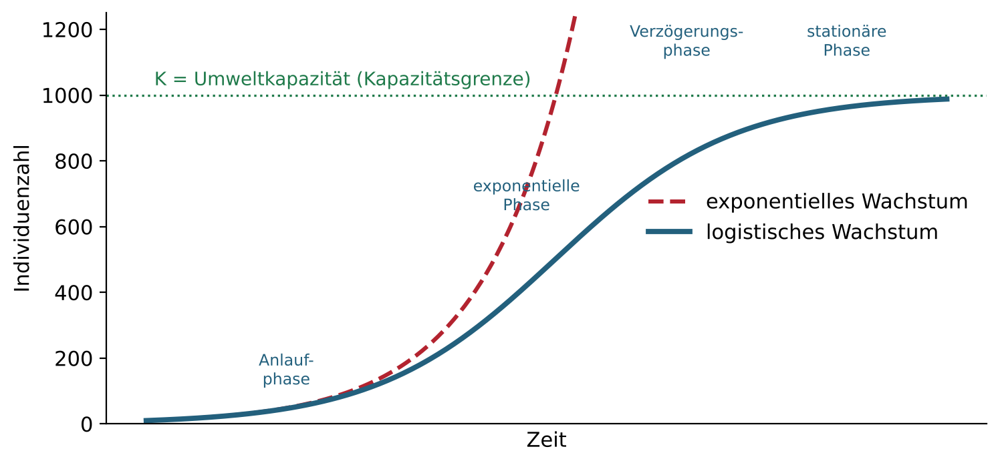
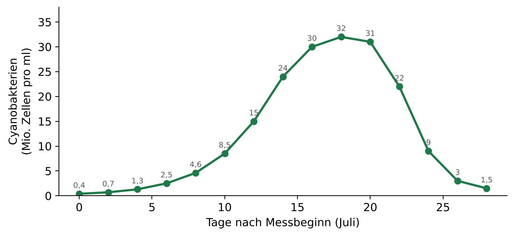

So nutzen Sie die Hilfen: Versuchen Sie es erst allein. Öffnen Sie dann Hilfe 1, danach Hilfe 2. Die Lösung dient zur Kontrolle – vergleichen Sie sie mit Ihrer eigenen Antwort und verbessern Sie diese im Hefter oder im PDF.
Aufgabe 1: Wachstumskurven
- Beschreiben Sie die beiden Kurven in Abb. 2 und benennen Sie die vier Phasen des logistischen Wachstums (grüne Kurve)!
- Erklären Sie den Verlauf der logistischen Kurve in der exponentiellen und in der stationären Phase mithilfe der Geburten- und Sterberate!
- Erklären Sie den Begriff Umweltkapazität (K) am Beispiel der Rehe in einem Wald!
Hilfe 1
a) Welche Kurve steigt immer steiler, welche flacht ab? b) In welcher Phase ist der Unterschied zwischen Geburten- und Sterberate am größten, in welcher sind beide gleich?
Hilfe 2
c) Was begrenzt die Zahl der Rehe? (Nahrung im Winter, Raum, Verstecke)
Lösung (erst nach eigenem Versuch öffnen!)
a) Die orange Kurve (exponentiell) steigt immer steiler an und übersteigt nach etwa 10 Zeitschritten die Umweltkapazität. Die grüne Kurve (logistisch) verläuft S-förmig: Anlaufphase (ca. 0–5 Zeitschritte, langsamer Anstieg), exponentielle Phase (ca. 5–10, steiler Anstieg), Verzögerungsphase (ca. 10–15, Anstieg wird flacher) und stationäre Phase (ab ca. 15, die Zahl bleibt bei etwa 1000 = Umweltkapazität).
b) Exponentielle Phase: Es gibt reichlich Ressourcen; die Geburtenrate ist viel höher als die Sterberate, die Population wächst immer schneller. Stationäre Phase: Die Ressourcen sind begrenzt; Geburtenrate und Sterberate sind (im Mittel) gleich groß, die Individuenzahl schwankt um die Umweltkapazität K.
c) Die Umweltkapazität ist die Höchstzahl an Individuen, die ein Lebensraum dauerhaft ernähren kann – z. B. so viele Rehe, wie der Wald mit Nahrung (v. a. im Winter), Deckung und Raum versorgen kann.
b) Exponentielle Phase: Es gibt reichlich Ressourcen; die Geburtenrate ist viel höher als die Sterberate, die Population wächst immer schneller. Stationäre Phase: Die Ressourcen sind begrenzt; Geburtenrate und Sterberate sind (im Mittel) gleich groß, die Individuenzahl schwankt um die Umweltkapazität K.
c) Die Umweltkapazität ist die Höchstzahl an Individuen, die ein Lebensraum dauerhaft ernähren kann – z. B. so viele Rehe, wie der Wald mit Nahrung (v. a. im Winter), Deckung und Raum versorgen kann.

Aufgabe 2: Bakterien im Kartoffelsalat
- Berechnen Sie, wie viele Salmonellen nach 5 Stunden bei 30 °C aus 100 Bakterien entstanden sind, die mit einem rohen Ei in den Kartoffelsalat gelangt sind!
- Begründen Sie, warum diese Wachstumsform im Kartoffelsalat nicht unbegrenzt anhält!
- Leiten Sie daraus Regeln für das Grillfest am Steinbachsee ab!
Hilfe 1
a) 5 Stunden = 10 Verdopplungen. Rechnen Sie 100 · 2¹⁰.
Hilfe 2
b) Was wird im Salat irgendwann knapp, was reichert sich an? c) Temperatur und Zeit sind die entscheidenden Faktoren.
Lösung (erst nach eigenem Versuch öffnen!)
a) 5 h = 10 Verdopplungen: 100 · 2¹⁰ = 100 · 1024 = 102 400 Bakterien – genug für eine Erkrankung.
b) Nährstoffe werden verbraucht, Platz wird knapp und giftige Stoffwechselprodukte reichern sich an; das Wachstum wird logistisch und erreicht eine Kapazitätsgrenze.
c) Speisen mit Ei, Mayonnaise, Fleisch oder Fisch bis zum Verzehr kühlen (Kühlbox unter 7 °C), nur kurz in die Sonne stellen, Reste nach längerer Zeit in der Wärme wegwerfen, keine rohen Eier verwenden, Hygiene beachten.
b) Nährstoffe werden verbraucht, Platz wird knapp und giftige Stoffwechselprodukte reichern sich an; das Wachstum wird logistisch und erreicht eine Kapazitätsgrenze.
c) Speisen mit Ei, Mayonnaise, Fleisch oder Fisch bis zum Verzehr kühlen (Kühlbox unter 7 °C), nur kurz in die Sonne stellen, Reste nach längerer Zeit in der Wärme wegwerfen, keine rohen Eier verwenden, Hygiene beachten.
Aufgabe 3: Dichteabhängig oder dichteunabhängig?
- Ordnen Sie die Faktoren durch Ankreuzen zu!
- Erklären Sie, warum Krankheiten und Parasiten dichteabhängig wirken!
- In einen Goldfischteich mit sehr guten Bedingungen werden einige Hechte eingesetzt (Abb. 4). Beschreiben Sie den Kurvenverlauf und erklären Sie ihn mithilfe von Abb. 3! Erläutern Sie dabei den Begriff Umweltkapazität!
Hilfe 1
Frage: Hängt der Anteil der betroffenen Tiere davon ab, wie viele Tiere auf engem Raum leben? c) Was passiert vor, was nach dem Einsetzen der Hechte? Lesen Sie in Abb. 3 die Wirkungspfeile: Was bedeutet „je mehr …, desto weniger …“?
Hilfe 2
b) Wie werden Krankheitserreger übertragen? c) Vor den Hechten regulieren Nahrung und Platz die Population (negative Rückkopplung). Die Hechte sind ein neuer dichteabhängiger Faktor: Prädatoren.
Lösung (erst nach eigenem Versuch öffnen!)
a) dichteabhängig: Nahrungsmangel, Räude, Revierkämpfe, Fuchs als Räuber (konzentriert sich auf häufige Beute). dichteunabhängig: Spätfrost, Hochwasser, Insektizid.
b) Krankheitserreger und Parasiten werden meist durch Kontakt, Tröpfchen oder Kot übertragen. Je dichter die Tiere zusammenleben, desto häufiger begegnen sie sich und desto schneller breitet sich die Krankheit aus; zudem sind Tiere bei Nahrungsmangel oft geschwächt.
c) Vor dem Einsetzen der Hechte schwankt die Goldfisch-Population nur geringfügig um einen gleichbleibenden Wert, die Umweltkapazität K. Die Umweltkapazität ist die größte Populationsgröße, die ein Lebensraum mit seinen Ressourcen dauerhaft tragen kann. Sie wird durch dichteabhängige Faktoren festgelegt (Abb. 3): Je mehr Goldfische, desto weniger Nahrung und Platz pro Tier und desto stärker die intraspezifische Konkurrenz – Geburtenrate sinkt, Sterberate steigt, die Population nimmt wieder ab (negative Rückkopplung). Ist die Population klein, gilt das Umgekehrte. Nach dem Einsetzen der Hechte bricht die Population stark ein und sinkt auf einen sehr niedrigen Wert: Die Hechte sind als Prädatoren ein zusätzlicher dichteabhängiger Faktor; die Goldfische finden im Teich kaum Verstecke. Es stellt sich ein neues Gleichgewicht auf niedrigerem Niveau ein.
b) Krankheitserreger und Parasiten werden meist durch Kontakt, Tröpfchen oder Kot übertragen. Je dichter die Tiere zusammenleben, desto häufiger begegnen sie sich und desto schneller breitet sich die Krankheit aus; zudem sind Tiere bei Nahrungsmangel oft geschwächt.
c) Vor dem Einsetzen der Hechte schwankt die Goldfisch-Population nur geringfügig um einen gleichbleibenden Wert, die Umweltkapazität K. Die Umweltkapazität ist die größte Populationsgröße, die ein Lebensraum mit seinen Ressourcen dauerhaft tragen kann. Sie wird durch dichteabhängige Faktoren festgelegt (Abb. 3): Je mehr Goldfische, desto weniger Nahrung und Platz pro Tier und desto stärker die intraspezifische Konkurrenz – Geburtenrate sinkt, Sterberate steigt, die Population nimmt wieder ab (negative Rückkopplung). Ist die Population klein, gilt das Umgekehrte. Nach dem Einsetzen der Hechte bricht die Population stark ein und sinkt auf einen sehr niedrigen Wert: Die Hechte sind als Prädatoren ein zusätzlicher dichteabhängiger Faktor; die Goldfische finden im Teich kaum Verstecke. Es stellt sich ein neues Gleichgewicht auf niedrigerem Niveau ein.
Aufgabe 4: r- oder K-Stratege?
- Ordnen Sie Feldmaus und Rothirsch den r- bzw. K-Strategen zu und begründen Sie mit mindestens drei Merkmalen!
- Erklären Sie, warum gerade r-Strategen wie Cyanobakterien oder Feldmäuse zu Massenvermehrungen neigen!
Hilfe 1
Vergleichen Sie Nachkommenzahl, Zeit bis zur Geschlechtsreife, Brutpflege und Lebensdauer mit der Tabelle.
Hilfe 2
b) Was passiert, wenn plötzlich viel Nahrung vorhanden ist und eine Art sich sehr schnell vermehren kann?
Lösung (erst nach eigenem Versuch öffnen!)
a) Feldmaus: r-Strategin – sehr viele Nachkommen, sehr frühe Geschlechtsreife, kurze Brutpflege, kurze Lebensdauer. Rothirsch: K-Stratege – wenige Nachkommen, späte Geschlechtsreife, lange Brutpflege (Säugezeit), lange Lebensdauer.
b) r-Strategen haben eine sehr hohe Vermehrungsrate und kurze Generationszeiten. Verbessern sich die Bedingungen plötzlich (z. B. viele Nährstoffe und Wärme im See, gute Ernte für Mäuse), wächst ihre Population nahezu exponentiell und überschreitet die Umweltkapazität. Danach bricht sie oft zusammen (Nahrungsmangel, Krankheiten, Wetterumschwung).
b) r-Strategen haben eine sehr hohe Vermehrungsrate und kurze Generationszeiten. Verbessern sich die Bedingungen plötzlich (z. B. viele Nährstoffe und Wärme im See, gute Ernte für Mäuse), wächst ihre Population nahezu exponentiell und überschreitet die Umweltkapazität. Danach bricht sie oft zusammen (Nahrungsmangel, Krankheiten, Wetterumschwung).
Basiswissen: Kennzeichen des Lebens
- Nennen Sie drei Kennzeichen des Lebens, die man an einer wachsenden Population von Cyanobakterien beobachten kann, und beschreiben Sie jeweils kurz, woran!
Hilfe 1
Was tun die Cyanobakterien, wenn die Population wächst? Woher nehmen sie Energie?
Hilfe 2
Fortpflanzung, Wachstum, Stoffwechsel/Energieumwandlung, Bewegung, Reizbarkeit …
Lösung (erst nach eigenem Versuch öffnen!)
z. B. Fortpflanzung (Zellteilung, die Zahl nimmt zu), Wachstum (die Zellen wachsen vor jeder Teilung), Stoff- und Energiewechsel (Fotosynthese, Aufnahme von Nährstoffen wie Phosphat), Reizbarkeit/Bewegung (manche Arten steigen mit Gasbläschen zum Licht auf).
Wahlaufgabe W1: Wächst die Weltbevölkerung exponentiell?
- Berechnen Sie die Zeit, die jeweils für eine weitere Milliarde nötig war, und beschreiben Sie die Entwicklung!
- Beurteilen Sie, ob das Wachstum der Weltbevölkerung eher exponentiell oder logistisch verläuft!
Hilfe 1
Bilden Sie die Differenzen der Jahreszahlen.
Hilfe 2
Exponentiell: Die Zeit für die Verdopplung bleibt gleich. Logistisch: Das Wachstum flacht ab.
Lösung (erst nach eigenem Versuch öffnen!)
a) 123, 33, 14, 13, 12, 12, 11 Jahre. Die Zeit bis zur nächsten Milliarde wurde bis ca. 1974 immer kürzer, seitdem liegt sie bei rund 12 Jahren und wird künftig wieder länger.
b) Bis etwa 1970 verlief das Wachstum annähernd exponentiell (sogar schneller). Seitdem nimmt die Wachstumsrate ab, weil die Geburtenraten in vielen Ländern sinken. Die Prognose eines Höchststands deutet auf ein logistisches Wachstum hin. Anders als bei Tieren hängt die „Kapazität“ beim Menschen aber auch von Technik, Lebensstil und Verteilung der Ressourcen ab.
b) Bis etwa 1970 verlief das Wachstum annähernd exponentiell (sogar schneller). Seitdem nimmt die Wachstumsrate ab, weil die Geburtenraten in vielen Ländern sinken. Die Prognose eines Höchststands deutet auf ein logistisches Wachstum hin. Anders als bei Tieren hängt die „Kapazität“ beim Menschen aber auch von Technik, Lebensstil und Verteilung der Ressourcen ab.
Wahlaufgabe W2: Die Mäuseplage
- Erklären Sie die Massenvermehrung und den anschließenden Zusammenbruch mithilfe dichteabhängiger und dichteunabhängiger Faktoren!
Hilfe 1
Was wirkt auf die Mäuse, wenn plötzlich sehr viele auf engem Raum leben?
Hilfe 2
Denken Sie an Nahrung, Krankheiten, Stress, Greifvögel und Füchse sowie an das Wetter.
Lösung (erst nach eigenem Versuch öffnen!)
Milder Winter und warmes, trockenes Frühjahr (dichteunabhängige, abiotische Faktoren) erhöhten die Überlebensrate; als r-Strategen vermehrten sich die Mäuse sehr schnell, die Population überschritt die Umweltkapazität. Bei extremer Dichte wirkten dichteabhängige Faktoren: Nahrungsmangel, Ausbreitung von Krankheiten und Parasiten, Stress (weniger Fortpflanzung), mehr Räuber (Mäusebussard, Fuchs, Eulen). Zusätzlich kann ein nasser, kalter Winter (dichteunabhängig) viele Tiere töten. Die Population brach zusammen.
Wahlaufgabe W3: Kaninchen in Australien
- Erklären Sie die explosionsartige Vermehrung und beurteilen Sie den Einsatz des Virus als Methode der Schädlingsbekämpfung!
Hilfe 1
Welche begrenzenden Faktoren fehlten in Australien?
Hilfe 2
Was passiert durch Selektion mit den wenigen Überlebenden?
Lösung (erst nach eigenem Versuch öffnen!)
In Australien fehlten dichteabhängige begrenzende Faktoren wie Fressfeinde, Krankheiten und Konkurrenten; Nahrung war reichlich vorhanden. Als r-Strategen vermehrten sich die Kaninchen nahezu exponentiell. Das Virus wirkte kurzfristig sehr stark (Krankheiten wirken dichteabhängig). Da aber einige Kaninchen widerstandsfähig waren, überlebten diese und vermehrten sich – die Population wurde resistent und erholte sich. Die Methode war also nur vorübergehend erfolgreich und birgt Risiken (z. B. für andere Arten); das Beispiel zeigt die Gefahr durch eingeschleppte Arten (Neobiota, Modul 7).
Wahlaufgabe W4: Abituraufgabe: Die Tigermücke am Oberrhein
- Zeichnen Sie die Toleranzkurve einer wechselwarmen Tierart für den Umweltfaktor Temperatur (Heft)! Beschriften Sie die Achsen sowie Minimum, Optimum, Maximum und Toleranzbereich!
- Nennen Sie aus dem Text je einen dichteabhängigen und einen dichteunabhängigen Faktor und erläutern Sie, wie diese das Wachstum der Tigermückenpopulation begrenzen!
- Beschreiben Sie den Zusammenhang zwischen Abb. 5A und Abb. 5B und erklären Sie ihn mithilfe des Textes!
- Beurteilen Sie, ob sich die Tigermücke dauerhaft im Oberrheingebiet ansiedeln wird!
- Stellen Sie die Übertragung der Dengue-Viren ausgehend von einem infizierten Menschen in einem Fließschema dar und ordnen Sie die Tigermücke begründet als Ekto- oder Endoparasit zu!
Hilfe 1
b) Welche Faktoren wirken stärker, je mehr Mücken es gibt? Welche wirken immer gleich – egal wie viele Mücken da sind? c) Vergleichen Sie Jahr für Jahr: Wann ist der Januar kälter als 0 °C, wann gibt es Befunde?
Hilfe 2
b) Fressfeinde finden bei vielen Mücken mehr Nahrung und vermehren sich; Frost tötet die Eier unabhängig von ihrer Zahl. c) Eine mittlere Januartemperatur unter 0 °C bedeutet, dass es zeitweise deutlich kälter als –2 °C war. d) Welche Daten sprechen dafür, welche dagegen? Formulieren Sie ein Fazit.
Lösung (erst nach eigenem Versuch öffnen!)
a) x-Achse Temperatur, y-Achse Aktivität (Lebensvorgänge); Optimumkurve vom Minimum über das Optimum zum Maximum, oberhalb des Optimums steiler Abfall (Enzyme denaturieren); Toleranzbereich zwischen Minimum und Maximum (vgl. Modul 2).
b) dichteabhängig, z. B. Fressfeinde (Ruderfußkrebse, Fledermäuse, Vögel): Je mehr Mücken, desto mehr Nahrung für die Fressfeinde, deren Zahl steigt – mehr Mücken werden gefressen (auch: innerartliche Konkurrenz um Brutgewässer). Dichteunabhängig, z. B. Temperatur: Unter –2 °C sterben die Eier, unabhängig davon, wie viele Mücken es gibt (auch: Wassermangel bei Trockenheit).
c) In Jahren mit mittlerer Januartemperatur unter 0 °C (2006, 2009) gibt es keine positiven Befunde (2010 und 2011: keine Daten). 2007, nach einem sehr milden Januar (6,0 °C), wird die Tigermücke erstmals nachgewiesen (0,5 % der Proben). Nach einer Folge milder Winter (2011 bis 2015: 1,9 bis 4,3 °C) steigt der Anteil positiver Befunde von 1 % (2012) auf 4,5 % (2015). In kalten Wintern treten Temperaturen unter –2 °C auf, die Eier sterben, eingeschleppte Mücken können nicht überwintern. In milden Wintern überleben die Eier, die Population kann wachsen. (2008: trotz mildem Januar kein Befund – z. B. Frost in einem anderen Monat oder zu wenige eingeschleppte Tiere.)
d) Dafür: langfristige Erwärmung, steigende Befunde seit 2012, ständige Einschleppung, viele künstliche Brutstätten. Dagegen: Schon ein einzelner strenger Winter kann die Population vernichten. Fazit z. B.: Eine dauerhafte Ansiedlung ist wahrscheinlich, wenn die Winter weiter mild bleiben.
e) infizierter Mensch (Viren im Blut) → Stich: Mücke saugt Blut mit Viren → Viren vermehren sich in der Mücke und gelangen in die Speicheldrüsen → Stich bei einem gesunden Menschen: Viren gelangen mit dem Speichel ins Blut → Vermehrung im Blut → Dengue-Fieber. Die Tigermücke ist ein Ektoparasit: Sie lebt nicht im Menschen, sondern saugt nur von außen Blut.
b) dichteabhängig, z. B. Fressfeinde (Ruderfußkrebse, Fledermäuse, Vögel): Je mehr Mücken, desto mehr Nahrung für die Fressfeinde, deren Zahl steigt – mehr Mücken werden gefressen (auch: innerartliche Konkurrenz um Brutgewässer). Dichteunabhängig, z. B. Temperatur: Unter –2 °C sterben die Eier, unabhängig davon, wie viele Mücken es gibt (auch: Wassermangel bei Trockenheit).
c) In Jahren mit mittlerer Januartemperatur unter 0 °C (2006, 2009) gibt es keine positiven Befunde (2010 und 2011: keine Daten). 2007, nach einem sehr milden Januar (6,0 °C), wird die Tigermücke erstmals nachgewiesen (0,5 % der Proben). Nach einer Folge milder Winter (2011 bis 2015: 1,9 bis 4,3 °C) steigt der Anteil positiver Befunde von 1 % (2012) auf 4,5 % (2015). In kalten Wintern treten Temperaturen unter –2 °C auf, die Eier sterben, eingeschleppte Mücken können nicht überwintern. In milden Wintern überleben die Eier, die Population kann wachsen. (2008: trotz mildem Januar kein Befund – z. B. Frost in einem anderen Monat oder zu wenige eingeschleppte Tiere.)
d) Dafür: langfristige Erwärmung, steigende Befunde seit 2012, ständige Einschleppung, viele künstliche Brutstätten. Dagegen: Schon ein einzelner strenger Winter kann die Population vernichten. Fazit z. B.: Eine dauerhafte Ansiedlung ist wahrscheinlich, wenn die Winter weiter mild bleiben.
e) infizierter Mensch (Viren im Blut) → Stich: Mücke saugt Blut mit Viren → Viren vermehren sich in der Mücke und gelangen in die Speicheldrüsen → Stich bei einem gesunden Menschen: Viren gelangen mit dem Speichel ins Blut → Vermehrung im Blut → Dengue-Fieber. Die Tigermücke ist ein Ektoparasit: Sie lebt nicht im Menschen, sondern saugt nur von außen Blut.
Wahlaufgabe W5: Das Comeback der Störche in Unterfranken
- Beschreiben Sie die Entwicklung der Storchenpopulation in Unterfranken (Abb. 6A) und in Bayern seit 1988 (Abb. 6B)!
- Ordnen Sie die im Text genannten Ursachen für den Rückgang und die Zunahme den dichteabhängigen bzw. dichteunabhängigen Faktoren zu oder begründen Sie, warum sie Lebensraum und Umweltkapazität verändern!
- Begründen Sie anhand von zwei Merkmalen, ob der Weißstorch ein r- oder ein K-Stratege ist, und erklären Sie damit, warum sich die Population nach dem Tiefstand nur langsam erholte!
- Von 2023 auf 2024 stieg die Zahl der Brutpaare in Bayern kaum noch an. Erläutern Sie zwei mögliche Ursachen und beurteilen Sie, ob die Population ihre Umweltkapazität erreicht hat!
Hilfe 1
a) Achten Sie auf Tiefstand, Zeitraum der Abnahme und Zunahme, Zahlen. b) Wirkt der Faktor stärker, wenn es mehr Störche gibt? Oder verändert er, wie viele Störche der Lebensraum überhaupt tragen kann? c) Zahl der Jungen, Brutpflege, Lebensdauer. d) Denken Sie an das logistische Wachstum und an das Wetter 2024.
Hilfe 2
b) Starkregen tötet Jungvögel unabhängig von der Zahl der Paare. Feuchtwiesen und Nisthilfen erhöhen die Umweltkapazität. Konkurrenz um Nester und Nahrung wird bei vielen Paaren stärker. d) Verzögerungsphase oder dichteunabhängiger Einbruch? Eine einzige Messung reicht für ein sicheres Urteil nicht.
Lösung (erst nach eigenem Versuch öffnen!)
a) Unterfranken: Rückgang von 56 Brutpaaren (1904) auf 12 (1933), danach schwankend um 10 bis 19 Paare, ab 1956 unter 10 Paare, 1965 noch 4 und 1972 keines mehr; 2022 wieder 35 Paare. Bayern: Tiefstand 1988 mit 58 Paaren, dann starke, zunächst fast exponentielle Zunahme auf 634 (2016), 1 097 (2022) und 1 180 (2023); 2024 etwa 1 200 – deutlich mehr als Anfang des 20. Jahrhunderts.
b) Dichteunabhängig: Abschuss, Starkregen (töten unabhängig von der Zahl der Störche), Stromleitungen. Die Trockenlegung von Feuchtwiesen und das Entfernen von Nestern verringern Nahrungs- und Nistplätze und damit die Umweltkapazität; Feuchtwiesen, Nisthilfen und Winterquartiere mit viel Nahrung (Deponien in Spanien) erhöhen sie. Dichteabhängig wirken z. B. Konkurrenz um Nester (Horstkämpfe) und Nahrung bei vielen Paaren.
c) K-Stratege: wenige Junge (meist 2 bis 4 Eier, im Mittel etwa 2 flügge Junge pro Paar), intensive Brutpflege durch beide Eltern, große Tiere mit langer Lebensdauer. Wegen der geringen Vermehrungsrate wirken sich Verluste stark aus, und die Population wächst nach einem Tiefstand nur langsam wieder an.
d) Mögliche Ursachen: Die Population nähert sich der Umweltkapazität (Verzögerungsphase: Nistplätze und Nahrungsflächen werden knapp, Konkurrenz nimmt zu) oder ein dichteunabhängiger Faktor (Starkregen 2024 mit vielen verlorenen Bruten). Urteil: Ein Jahr reicht nicht aus; erst die Entwicklung über mehrere Jahre zeigt, ob die Population stationär bleibt.
b) Dichteunabhängig: Abschuss, Starkregen (töten unabhängig von der Zahl der Störche), Stromleitungen. Die Trockenlegung von Feuchtwiesen und das Entfernen von Nestern verringern Nahrungs- und Nistplätze und damit die Umweltkapazität; Feuchtwiesen, Nisthilfen und Winterquartiere mit viel Nahrung (Deponien in Spanien) erhöhen sie. Dichteabhängig wirken z. B. Konkurrenz um Nester (Horstkämpfe) und Nahrung bei vielen Paaren.
c) K-Stratege: wenige Junge (meist 2 bis 4 Eier, im Mittel etwa 2 flügge Junge pro Paar), intensive Brutpflege durch beide Eltern, große Tiere mit langer Lebensdauer. Wegen der geringen Vermehrungsrate wirken sich Verluste stark aus, und die Population wächst nach einem Tiefstand nur langsam wieder an.
d) Mögliche Ursachen: Die Population nähert sich der Umweltkapazität (Verzögerungsphase: Nistplätze und Nahrungsflächen werden knapp, Konkurrenz nimmt zu) oder ein dichteunabhängiger Faktor (Starkregen 2024 mit vielen verlorenen Bruten). Urteil: Ein Jahr reicht nicht aus; erst die Entwicklung über mehrere Jahre zeigt, ob die Population stationär bleibt.
Sichern: Fachsprache und Denkfallen
Erst selbst erklären, dann kontrollieren. Übernehmen Sie die Begriffe in Ihr Glossar.
Fachbegriffe: Kontrollieren Sie Ihre Erklärungen mit der Übung „Fachbegriffe zuordnen – Kontrolle Modul 6“ im mebis-Kurs.
Lösung: Denkfallen
- „In der stationären Phase werden keine Jungtiere mehr geboren.“ – falsch – Es werden weiterhin Jungtiere geboren, aber Geburten- und Sterberate sind gleich groß.
- „Ein Kälteeinbruch wirkt dichteabhängig, weil bei einer großen Population mehr Tiere sterben.“ – falsch – Es sterben zwar absolut mehr Tiere, aber der Anteil der Population ist unabhängig von der Dichte gleich. Entscheidend ist der Anteil.
- „K-Strategen sind „höher entwickelt“ als r-Strategen.“ – falsch – Beide Strategien sind Angepasstheiten an unterschiedliche Lebensräume. In unbeständigen Lebensräumen sind r-Strategen erfolgreicher.
Gutachten · Befund Kapitel 6
Ein Sommer am Steinbachsee – Kapitel 6: „Der See wird grün“
- Beschreiben Sie den Verlauf der Cyanobakterien-Blüte (Abb. 1 im Gutachten, S. 2) mit den Phasen des Populationswachstums!
- Erklären Sie den Zusammenbruch der Blüte mit dichteabhängigen und dichteunabhängigen Faktoren!
- Formulieren Sie zwei Empfehlungen für Badegäste während der Blüte!
Tipp
Lesen Sie das Kapitel 6 des Gutachtens noch einmal und suchen Sie in den Pflichtaufgaben dieses Moduls die passenden Fachbegriffe.

Lösung (erst nach eigenem Versuch öffnen!)
- Bis etwa Tag 14 wächst die Population nahezu exponentiell (die Zellzahl verdoppelt sich etwa alle 2–3 Tage), danach flacht das Wachstum ab (Verzögerungsphase) und erreicht um Tag 16–20 ein Maximum von gut 30 Mio. Zellen/ml. Ab Tag 22 bricht die Population zusammen.
- Dichteabhängig: Bei sehr hoher Dichte werden Nährstoffe (v. a. Phosphat) und Licht knapp (die Zellen beschatten sich gegenseitig), Viren und Bakterien breiten sich aus. Dichteunabhängig: Der Wetterumschwung mit Kälte und Wind (Durchmischung) trifft die wärmeliebenden Cyanobakterien unabhängig von ihrer Dichte.
- z. B. Bei sichtbarer Blüte bzw. wenn man knietief im Wasser die Füße nicht mehr sieht, nicht baden. Kleinkinder nicht im Uferbereich spielen lassen, kein Wasser schlucken, nach dem Baden abduschen. Hunde nicht ins Wasser lassen. Warnhinweise des Gesundheitsamtes beachten.